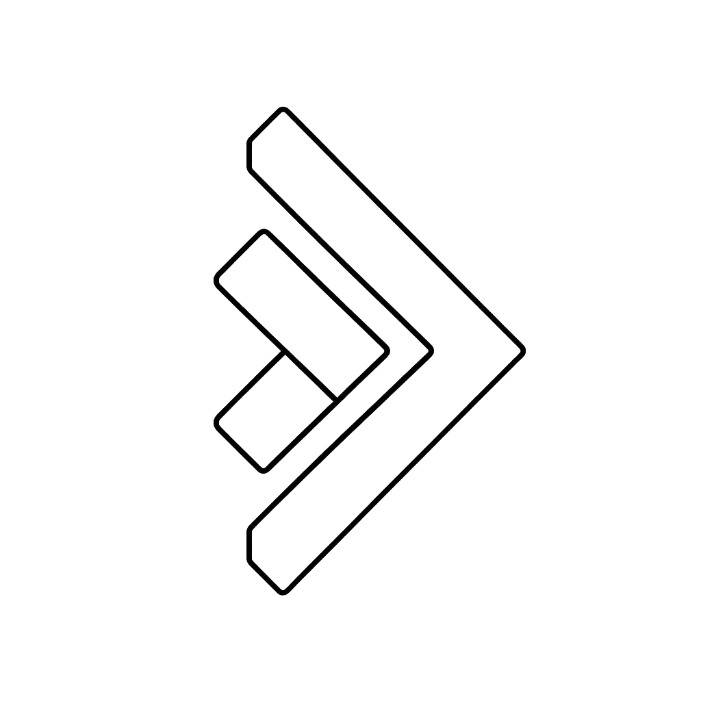

 KES?
Nimi: Airika Andruse
Nimi: Airika Andruse
Amet(id): Informaatikaõpetaja,
Uurmistööde ja praktiliste tööde
(UPT) koordinaator,
11.c klassi mentor
Alustasin tööd õpetajana 2015. aastal Kohtla-Järve Järve Gümnaasiumis. Olles ise siis veel üliõpilane õpetasin väikse koormusega põhikooli kolmandas astmes matemaatikat. 2017 aasta kevadel läksin osalise koormusega tööle Jõhvi Gümnaasiumisse. Pärast suvevaheaega jätkasin sügisel (2017) Jõhvi Gümnaasumis juba täiskoormusega informaatikaõpetaja ja haridustehnoloogi ametikohtadel. 2022 aastal täitus mul 5. tööjuubel. Nüüdseks olen õpetajana kokku töötanud 10,5 aastat, Jõhvi Gümnaasiumis 8,5 aastat.
Koordineerin uurimistööde ja praktiliste tööde (UPT) terviklikku protsessi Jõhvi Gümnaasiumis, kus iga aasta teevad, koostavad ja kaitsevad enda UPT-d kuue klassi õpilased ehk ligikaudu 150 õpilast ja u 100 UPT tööd(praktilisi töid võib teha kahekesi). Informaatikaõpetajana ja infotehnoloogia (IT) valikmooduli õpetajana juhendan õpilasi katsetama või looma erinevaid tehnoloogilisi keskkondi, ning programme. Mentorina jälgin enda klassi õppeedukust, toetan õpilasi gümnaasiumis õppides, aidates leida vastuseid nende küsimustele.
Katsetan uusi keskkondi ning programme, hetkel on mul fookuses näiteks erinevad tehisintellektid ja nende uuendused. Kuna õppegrupid on erinevad siis vajadusel kohandan enda õpetamismeetodeid ja -tegevusi vastavalt paralleelklasside ja õpilaste järgi. Mentorina aitan õpilastel planeerida õppetegevusi ja vajadusel õppimisel motivatsiooni hoida.
Alates eelmisest õppeaastast olen kohandanud oma õppematerjale ja õpitegevusi, muutes neid või lisades juurde erinevaid võimalusi, kuidas neid saab tehisintellektide abil teostada. TI-Hüppeks on vaja ettevalmistuda.
Järgin Jõhvi Gümnaasiumi põhiväärtusi. "Meie õppija ja õpetaja on inimlik, loov ja tark." Põhiväärtused
Suunan õpilasi ausalt töötama, õpetades kasutama allikaid õigesti, viitama ja vältima plagiaati nii õppetöös üldiselt kui uurimistööde ja praktiliste tööde tegemisel.
Arvan, et muutused aitavad leida uusi lahendsi. "Kui ei saa ühtemooid siis saab teisiti." Igale olukorrale on lahendus.
Viin enda klassis läbi iga aastaseid lastevanematekoosolekuid, arenguvestlusi õpilaste ja lapsevanematega. Suhtlen õpilaste ja töökaaslastega avatult, märkan inimesi, kuulan ning vajadusel toetan või abistan.
Informaatika ja IT valikmooduli tundide ettevalmistamisel katsetan ja arutlen koos haridustehnoloogiga erinevate lahenduste võimaluste ja ka piirangute üle. Alustasime kood/Jõhvi tehnoloogiakooliga koostööd ning nende veebikeskkonnas saavad meie õpilased iseseisvalt õppides läbida IT kursuseid. UPT õppetegevustes juhendan, abistan nii õpilasi kui ka juhendajaid ning retsensente.
Kasutan igapäevaselt enda tundides digivahendeid ja -keskkondi. Õpetan eetilist veebikäitumist (küberturvalisus, -teadlikkus, andmekaitse ja autoriõiguseed). Olen enda õppematerjalidest ja -tegevustest koostanud Moodles kursused. Kui töötasin Jõhvi Gümnaasiumis haridustehnoloogi ametis siis korraldasin ja viisin läbi digiteemalis sisekoolitusi. Lõpetasin rakendusinfotehnoloogia erialal rakenduskõrghariduse spetsialiseerudes tarkvaraarendusele. Koostasin antud veebilehe (e-portfoolio) HTML, CSS ja JavaScripti koodidena.